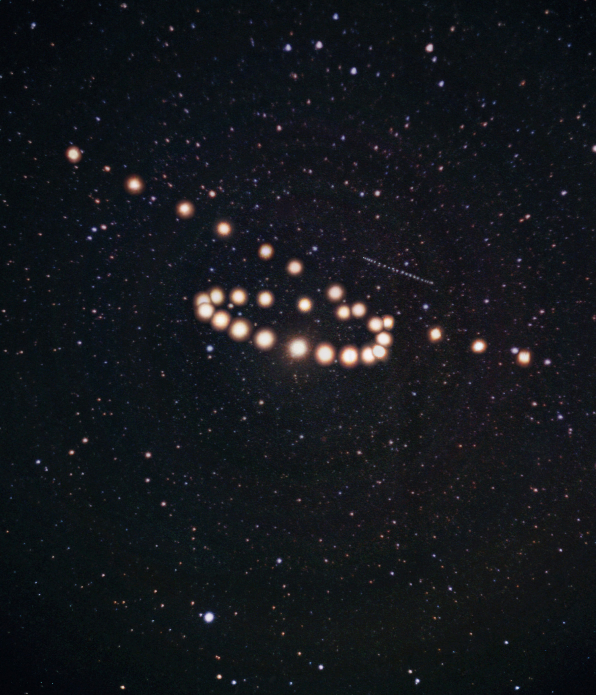
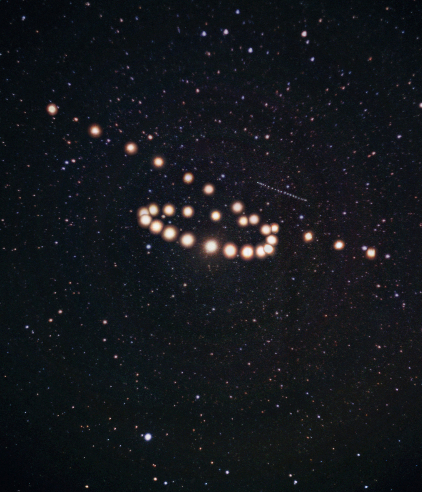

Você
Seu coração é e sempre será a coisa mais maravilhosa que eu já pude conhecer. Quando estamos juntos, os dias se tornam horas, as horas se tornam segundos. Uma vida inteira é tão pouco para se estar ao seu lado.

Seu coração é e sempre será a coisa mais maravilhosa que eu já pude conhecer. Quando estamos juntos, os dias se tornam horas, as horas se tornam segundos. Uma vida inteira é tão pouco para se estar ao seu lado.
 

Registro publicado pela NASA em 16 de Dezembro de 2003
Enquanto você nascia, há pouco menos de 21 anos atrás, o universo fazia festa. Marte ia e voltava, como se estivesse em uma linda festa ao ver você nascer. Sim, por sua causa obviamente. Você veio das estrelas, é parte do universo em sua completa estrutura. O Universo, antes de te transnformar nessa mulher linda que é hoje, se certificou de que deixaria em você algo que só vemos ao olhar para o céu: uma estrela. Quando você caminha, o mundo para pra olhar para você. Você faz com que as cidades fiquem lentas, sinais fechem, comércios fiquem em camera lenta, que o relógio pare, somente por existir. Você é uma estrela de neutrons imensa, que curva a matéria para si mesma a ponto de fazer com que todos fiquem admirados pela sua beleza. Sua alma é linda, seu sorriso é maravilhoso e eu? Bom, eu sou um homem tremendamente apaixonado por você!
Infelizmente você não tem muitas obras escritas, o que é uma pena. Você tem uma inteligência que eu admiro a ponto de nem caber dentro de mim. Vejo em você tanta capacidade e potencial que a própria Terra fica pequena ao comparar.
Há somente duas até o momento, que eu já li e reli quase que mil vezes. Admiro o seu jeito de se expressar.
Infelizmente você não tem muitas obras escritas, o que é uma pena. Você tem uma inteligência que eu admiro a ponto de nem caber dentro de mim. Vejo em você tanta capacidade e potencial que a própria Terra fica pequena ao comparar.
Há somente duas até o momento, que eu já li e reli quase que mil vezes. Admiro o seu jeito de se expressar.
Aqui ficarão armazenados os filmes que desejamos assistir. Cada vez mais que formos tendo ideias de filmes, mais essa lista irá crescer!
Lista de Filmes